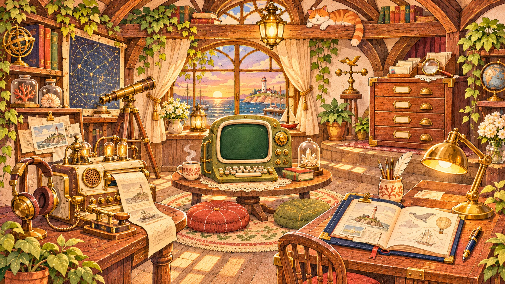

你的六岛航线
海上有路，慢慢走。
点岛屿或下面的目的地，小船就会驶过去。航行中也可以改道。航行时镜头跟随小船；随时打开“总海图”改道或直接抵达。
航海日志 · 靠岸
小船在灯塔旁等你。
挑一座岛。工坊里有三个真实产品，故事小屋里放着文学、绘本与手记。
0 / 6 座岛已到访
不用集齐什么，也能走进每一座岛。
到访记录仅保存在本机浏览器。六座岛均可航行、登岸和返回。也可以直接用航行手册找作品 ↗
默认静音。点击“声音 · 关”开启试听；建议先用较低音量。

你的六岛航线
点岛屿或下面的目的地，小船就会驶过去。航行中也可以改道。航行时镜头跟随小船；随时打开“总海图”改道或直接抵达。
航海日志 · 靠岸
挑一座岛。工坊里有三个真实产品，故事小屋里放着文学、绘本与手记。
0 / 6 座岛已到访
不用集齐什么，也能走进每一座岛。
到访记录仅保存在本机浏览器。六座岛均可航行、登岸和返回。也可以直接用航行手册找作品 ↗